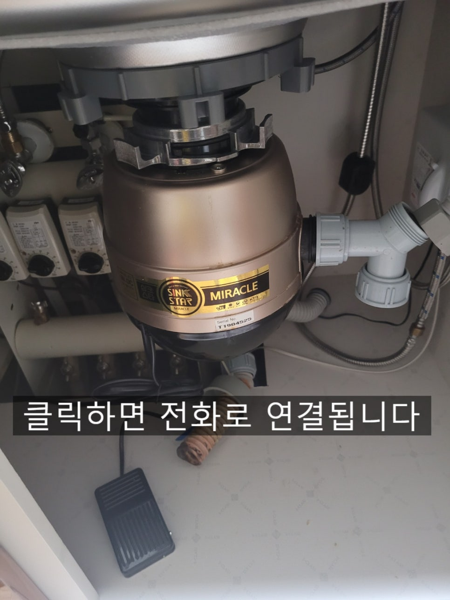
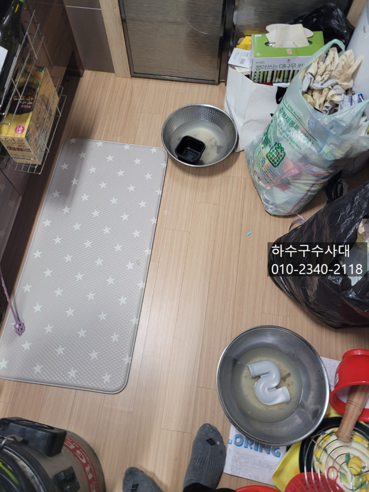
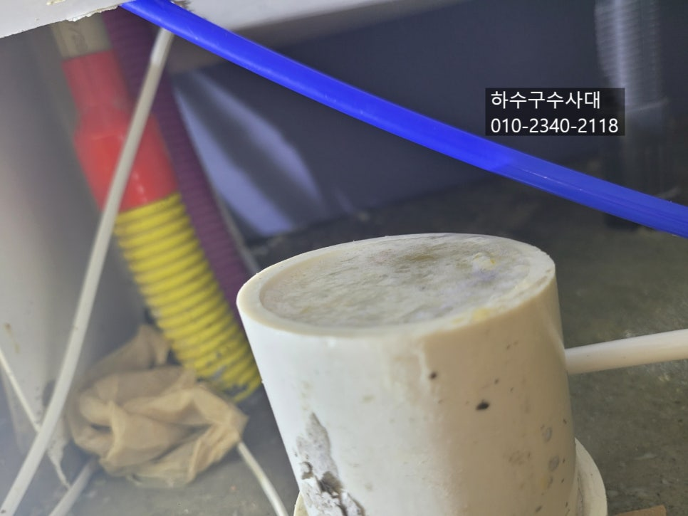
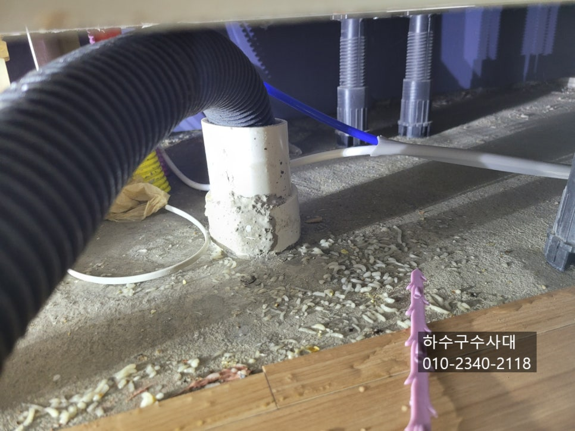
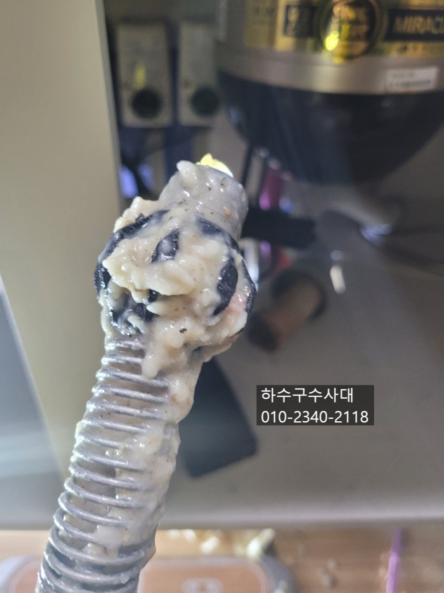
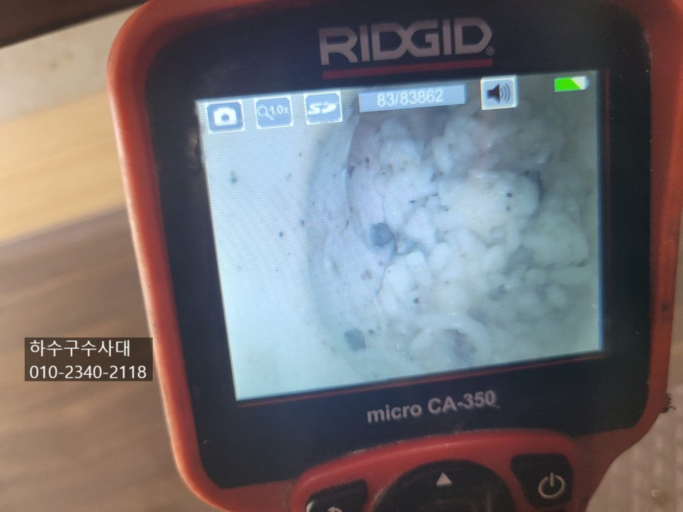
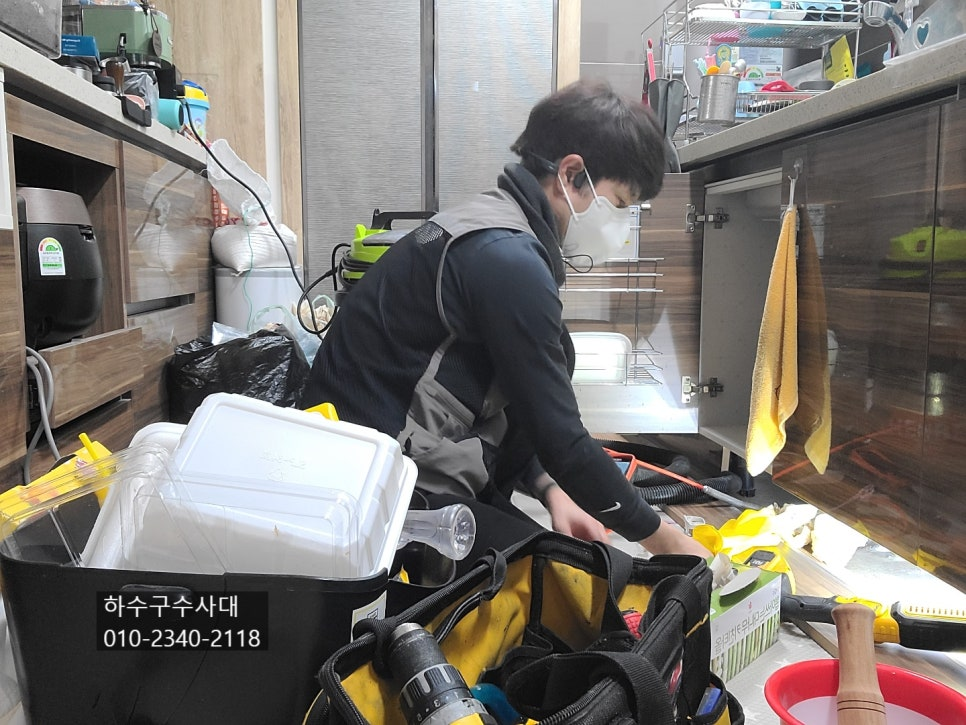

🏠 음식물처리기 싱크스타하수구막힘 원인과 예방
서울 싱크대막힘 전문 시공 후기

📋 작업 개요
- 위치: 서울
- 서비스 유형: 싱크대막힘, 하수구막힘, 배관막힘, 역류해결, 배관청소
- 작업 일시: 2022. 2. 22. 1:04
- 업체명: 하수구수사대 (010-5615-2118)
🔍 문제 상황
음식물처리기 싱크스타하수구막힘 원인과 예방
안녕하세요
하수구수사대 입니다.
요즘 가정집에서 남은 음식물을 봉투에
담아 놓으면 냄새도 나고 또 모아서 버리러
가는것도 일인데요 이러한 불편함을 해결하고자
음식물처리기를 설치하는 곳도 점점 늘어나고 있답니다.
하지만 음식물처리기에 넣지 말아야 할 음식물들이 있는데
이를 깜빡하거나 모르고 넣게 되면 하수구가 막히는 원인이
되기도 한답니다.
여러가지가 있지만 몇가지 예를 들면 쌀이나 질긴채소껍질,계란 등등
조심해야 할것들이 많답니다. 이런것도 갈다가 막히는데
도대체 어떤 음식물을 갈라는건지 ㅜㅜ
계란껍데기는 갈리지만 문제는 하수구배관에 계란껍질이 점점
쌓이는 겁니다. 그러다 보면 계란껍질 때문에 하수구가 막히기도 한답니다.
또 질긴채소껍질은 잘 갈리지않은채 서로 엉겨붙어 호스에서 막히거나
하수구에 엉겨서 막히기도 한답니다.

🔎 원인 분석
💡 전문가 진단: 하수구수사대010-2340-2118
오늘 방문한곳은 쌀을 갈아서 넣으셨는데요 하수구배관을
열어보니 물이 전혀 내려가지 않는것을 확인할수 있었어요.
적은 양의 쌀은 갈려서 나가겠지만 고객님께서 많은양을
갈야 넣으셨답니다.
쌀때문에 막힌곳을 몇번 가봤는데요 제일 어려웠던 곳은
4시간동안 작업을 한곳도 있었어요.
불린쌀을 넣어 배관 깊숙한곳에 흘러들어가 불어 버려
거의 떡상태가 된 경우도 봤답니다.
음식물처리기를 작동할때 필수적인게 물이랍니다.
많은양의 물과함께 갈아야 흘러나가게 되는데 물양이
적으면 갈아낸 음식물들이 죽처럼 쌓여 흘러나가지 않고
쌓여 기름덩어리가 되거나 죽상태로 막힐수도 있으니 물을
충분히 흘려보내 주셔야해요.
내시경을 투입하여보니 떡처럼 찐득찐득하게
엉겨붙어버려 하수구를 꽉 막고 있습니다.
특히나 음식물처리기를 사용하는 가정집의 하수구는 유난히
악취가 심한데요 이유는 갈아낸 음식물들이

🔧 작업 과정
하수구에서 완전히 배출되지않고 집안 내 하수구배관에 쌓여
썩다보니 하수구로 역류해서 냄새가 나는경우가 많답니다.
하수구배관을 청결하게 하기위해선 물을 충분히 흘려보내야하고
주기적으로 펑크린 또는 뚜러펑 같은 세정제를 넣어주는것도
좋은 방법입니다. 하지만 보이지 않는 하수구배관에 깨끗한지
구조는 어떻게 되어있는지 모르지 관리를 소홀히 할수 밖에 없는것이
현실입니다.
음식물처리기를 설치해야한다면 배관상태를 점검받는것도
좋답니다 . 특히나 오래된 가정집은 하수구에 기름이 쌓여있을
확률이 높기때문에 배관청소를 하고 구조를 파악한뒤 음식물처리기를
설치하여 관리하면 좋답니다.
요즘은 아파트에 많이들 설치하시는데 같은아파트라도 구조는 같지만
배관의 기울기는 집집마다 다르답니다.
배관의 기울기에 따라 기름슬러지가 쌓이는 속도가 다른데요
사용하시는 분들마다 다르기 때문에 내시경카메라를 넣기전까지는
아무도 모른답니다^^
테스트방법이 있는데요 싱크대위에 물을 많이 받아서
한번에 내렸을때 밑에 하수구에서 역류를 하게된다면
배관에 기름이 반이상은 있다고 보시면 됩니다.
배관이 어느정도 깨끗하다면 많은양의 물도
모두 소화가 가능하지만 배관이 좁아진 상태라면 소화하지
못하고 역류를 할 수 있답니다.
배관청소를 하고 난뒤에서 물을 받아서 내려보는 테스트를
해주는데요 내시경으로 확인을 했지만 한번더 확인하는 차원에서
물을 내려준답니다^^
배관청소를 마치게 되면 항상 1차2차 검수를 꼼꼼하게 해야합니다.
이처럼 음식물처리기는 불편함을 줄여줄수도 있지만


✅ 작업 완료
사용을 잘못하거나 배관상태가 좋지않다면
생각하지 못한 피해를 입기도 한답니다.
"하수구수사대"는 서울,경기,인천 전지역에서
방문가능하오니 하수구막힘으로 고민중이시라면
언제든지 연락주십니다.
하수구수사대
010-2340-2118




⚠️ 주방 싱크대 배관 막힘 예방 수칙
- ✅ 기름기가 묻은 식기나 프라이팬은 설거지 전 키친타올로 반드시 기름때를 닦아내세요.
- ✅ 주기적으로 싱크대 개수대에 뜨거운 물을 가득 받아 한 번에 내려 배관 내부 기름을 씻어내세요.
- ✅ 배수구 거름망을 미세한 필터로 사용하시고 음식물 찌꺼기가 틈으로 새어 들지 않게 관리하세요.
- ✅ 베이킹소다와 식초를 뜨거운 물과 함께 일주일에 한 번씩 부어주면 배관 살균과 막힘 예방에 좋습니다.
💡 핵심 정리
- 확실한 장비 작업(내시경 점검 및 샤프트 스케일링)으로 원인을 뿌리 뽑습니다.
- 작업 후 1년 이내에 동일한 부위 재발 시 100% 무상 A/S 서비스를 보장합니다.
- 서울 · 경기 · 인천 전 지역에 24시간 언제든 긴급 출동할 수 있도록 항시 대기 중입니다.
❓ 자주 묻는 질문 (FAQ)
🚨 서울 싱크대막힘 문제로 고민이신가요?
정확한 원인 진단과 확실한 시공으로 재발 없는 해결을 약속드립니다.
24시간 긴급 출동 | 서울 · 경기 · 인천 전지역 | 1년 내 재발 시 무상 A/S